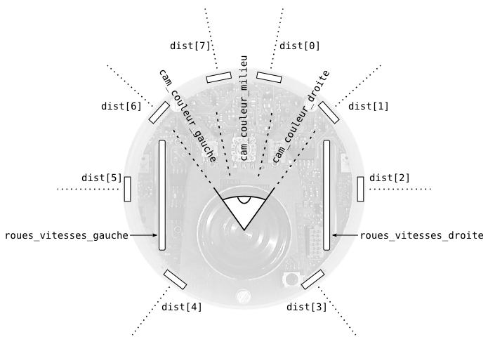

Cette page vous explique comment démarrer avec Aseba si vous n'avez pas de robot physique. Si vous avez un Thymio II, il existe une page spécialisée.
Aseba challenge (image à droite) est un monde simulé où des robots contrôlés par Aseba cherchent de la nourriture. Vous pouvez l'utiliser comme espace de jeu pour écrire des scripts Aseba ou comme un jeu éducatif pour apprendre ou enseigner la programmation.
Pour démarrer, vous devez lancer Aseba challenge, qui est disponible une fois Aseba installé. Si Aseba n'est pas encore installé, veuillez suivre les instructions d'installation. Une fois challenge démarré, il faut cliquer sur «Ajouter un robot» et lui choisir un nom. Si vous êtes un groupe, il faut ajouter un robot pour chaque joueur. Vous pouvez enlever tous les robots en cliquant sur «Enlever tous les robots». Vous pouvez cacher les boutons en cliquant sur «Cacher auto» : les boutons ne seront visibles que lorsque le curseur de la souris sera proche. Vous pouvez laisser la caméra bouger automatiquement en cliquant sur «Caméra auto». Si vous bougez la caméra manuellement, les contrôles sont les suivants :
Challenge affiche le score de chaque robot sur des tableaux translucides suspendus au dessus de l'arène. Le but de chaque robot est de rester vivant en collectant de l'énergie. Tant que le robot est vivant, ses points augmentent ; quand il meurt, ils sont divisés par deux. Quatre sources d'énergie bleues nourrissent les robots à proximité. Quand une source est vide, elle devient rouge et ne fournit plus d'énergie. De temps à autres, une source plonge dans le sol et les robots ne la voient plus jusqu'à ce qu'elle réapparaisse.
Une fois qu'Aseba challenge fonctionne, vous devez démarrer Aseba studio pour programmer votre robot. Pour chaque robot, vous devez lancer une instance de studio, qui peut être sur n'importe quel ordinateur. Au démarrage, studio vous propose de vous connecter à une cible Aseba (image à droite). Si vous avez lancé challenge sur votre ordinateur et ajouté un robot, l'option par défaut permet de s'y connecter. Si challenge tourne sur un autre ordinateur ou s'il y a plusieurs robots dans l'arène, veuillez spécifier l'ordinateur dans hôte et le robot dans port. L'écran translucide au dessus de l'arène dans challenge affiche les ports correspondant aux différents robots.
Une fois studio lancé (image de droite), vous pouvez éditer le programme du robot dans la zone centrale. C'est un éditeur de programme qui vérifie et compile votre programme en temps réel, vous indiquant en bas si le programme est correct ou non. Vous pouvez en apprendre plus sur studio dans le menu Aide -> Studio. Le menu Aide -> Langage fournit une documentation détaillée du langage de programmation d'Aseba.
Pour programmer un robot, vous devez d'abord comprendre comment il fonctionne. Un robot interagit en boucle avec le monde : il perçoit son état à grâce à ses capteurs, prends des décisions avec son ordinateur intégré, et effectue des actions avec ses actuateurs ; ces actions changent l'état du monde, et le robot perçoit ce nouvel état au moment où il lit ses capteurs à nouveau.
Dans challenge, vous programmez un robot e-puck simulé. Il possède 8 capteurs de proximité répartis autour de son corps et une caméra simplifiée pointée en avant et composée de 3 pixels de 20° d'ouverture chacun. Vous pouvez lire ces valeurs et aussi choisir la vitesse des roues :

Écrivons maintenant votre premier contrôleur de robot. Dans l'éditeur de texte au milieu de la fenêtre de studio, écrivez les lignes suivantes :
roues_vitesse_gauche = 5
roues_vitesse_droite = -5
Pour interagir avec le monde en continu, le robot doit exécuter un script périodiquement. Ceci est possible grâce aux mots clés onevent timer. Par exemple, en utilisant un capteur de proximité avant, nous pouvons spécifier la vitesse des roues en fonction de la distance à l'objet devant le robot :
onevent timer
roues_vitesse_gauche = dist[0] - 6
roues_vitesse_droite = dist[0] - 6
Garder une distance de sécurité à l'objet devant le robot est une bonne chose, mais pour l'instant le robot ne peut pas aller ailleurs. Pour faire que le robot se promène, nous devons comprendre son principe de déplacement.
Le robot e-puck simulé dans challenge est de type robot à roues différentielles ; ce type de robot choisit sa direction en fixant des vitesses différentes à ses roues gauche et droite. Si chaque roue a la même vitesse, le robot va en avant ; sinon il tourne ; si les vitesses sont opposées, le robot tourne sur place. Les véhicules à chenilles comme les pelleteuses de chantier utilisent le même principe.
Écrivons maintenant un petit code qui permet au robot d'éviter les obstacles et d'aller tout droit s'il n'y en a aucun :
onevent timer
roues_vitesse_gauche = dist[1] - 6
roues_vitesse_droite = dist[6] - 6
Les contrôleurs que nous avons vus jusqu'à maintenant liaient les valeurs des capteurs aux vitesses des roues à travers des expressions mathématiques, mais ne prenaient pas de décision de type «si, alors». Néanmoins c'est parfois désirable ; par exemple lorsque nous voulons que le robot aille soit tout droit, soit qu'il tourne sur place, et non pas qu'il fasse des trajectoires courbes, nous pouvons écrire :
var dists
onevent timer
dists = dist[6] + dist[7] + dist[0] + dist[1]
if dists < 48 then
roues_vitesse_gauche = 5
roues_vitesse_droite = -5
else
roues_vitesse_gauche = 5
roues_vitesse_droite = 5
end
Jouez un moment avec l'évitement d'obstacle afin de bien comprendre les capteurs, les actuateurs, et la dynamique du robot. N'hésitez pas à essayer des choses, le robot est dans un simulateur et donc ne risque rien.
Une fois que vous vous sentez à l'aise, essayez de programmer le robot pour qu'il se dirige vers les sources de nourriture quand elles sont bleues (0, 0, 100) (en rouge, vert, bleu), et de les éviter quand elles sont rouges (100, 0, 0). Les murs de l'arène sont gris (50, 50, 50). Essayez de jouer avec vos amis et de programmer le meilleur contrôleur de robot. Vous pouvez changer la couleur de votre robot (en modifiant les variables couleur_rouge, couleur_vert et couleur_bleu), et donc feindre d'être une source de nourriture. Si les autres trompent votre robot de cette façon, vérifiez la variable energie ; si sa valeur n'augmente pas alors que le robot voit du bleu, c'est qu'un autre robot le trompe.
Le but de challenge est d'apprendre la robotique, la programmation et Aseba tout en s'amusant.
Les pages suivantes peuvent vous intéresser :
{kind=link}
{kind=link}